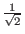
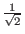

It is instructive to consider the special case of N = 4. In this special case, the precise number of iterations needed to attain the correct measurement with unit certainty is one. Thus it can provide some intuition as to the manner in which Grover's algorithm exploits interference between the states to raise the probability of the the desired state. [Grover00]
In the case of N = 4 then, the entire Grover's algorithm is simply:
Let us trace the evolution of our quantum register through the algorithm. Let us assume the state we are searching for is the state three. We will denote the state of our quantum register like this: (a, b, c, d )T, where the probability of measuring the register to be in the state 00 is a2, the probability of measuring state 01 is b2, the probability of measuring state 10 is c2, and the probability of measuring state 11 is d2. In general, the amplitudes could be complex, but no complex amplitudes are used in Grover's algorithm, so a2 = | a|2.
For a 4 state system, the Walsh-Hadamard transformation is represented by the matrix:
The inversion about average transformation is represented by the matrix:
After step 1 of our algorithm the quantum register is in the state
(1, 0, 0, 0)T.
After step 2 of our algorithm the quantum register is in the state
W*(1, 0, 0, 0)T = (.5,.5,.5,.5)T
After step 3 of our algorithm the quantum register is in the state
(.5,.5, - .5,.5)T. Remember, the marked element in this example is
the third one.
After step 4 of our algorithm the quantum register is in the state
A*(.5,.5, - .5,.5)T = (0, 0, 1, 0)T.
Now comes step 5, the measurement step, we can see that with unit
probability we will measure the state 3, which was the marked
state.
Now, this is an exceptional case, in general we will not attain unit
probability after any number of iterations. By theorem 2 we can see
that there is some number of iterations m that is
O( ) such
that the probability of measuring the marked state is at least 1/2.
Note that the result for monotonic increasing probability of the
marked state proved in theorem 2 only applies so long as the amplitude
of the marked state is less than
. Once the
amplitude is greater than that further applications of A cause it to
shrink, it will then oscillate back and fourth as more applications of
the inner loop are executed. [BBHT96]
) such
that the probability of measuring the marked state is at least 1/2.
Note that the result for monotonic increasing probability of the
marked state proved in theorem 2 only applies so long as the amplitude
of the marked state is less than
. Once the
amplitude is greater than that further applications of A cause it to
shrink, it will then oscillate back and fourth as more applications of
the inner loop are executed. [BBHT96]